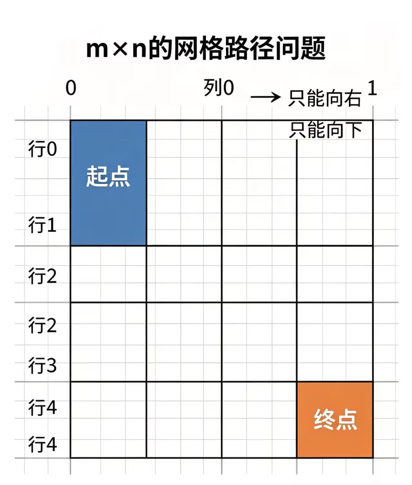

动态规划
动态规划
动态规划一般是将一个问题分解成多个子问题，每个子问题的解可以独立计算，最后将所有子问题的解合并起来，得到问题的解。
我个人认为动态规划的思路比较抽象，需要多练习才能掌握。
最经典的动态规划问题就是01背包问题，但是我是从打家劫舍问题开始了解动态规划的。
打家劫舍问题：
你现在是一个专业的小偷，计划偷窃沿街的房屋。 每个房屋都藏有一定的现金，影响你偷窃的唯一因素就是相邻的房屋装有相互连通的防盗系统， 如果两间相邻的房屋在同一晚上被小偷闯入，系统会自动报警。
思路就是：现在有两种偷法：
偷法1：偷前k-1个房屋，最后一个房屋不偷。f(k-1)
偷法2：偷前k-2个房屋+最后一个房屋。f(k-2)+k-1
{[/][/][/]....[/] . [/] . [ ] . [ /]}
{ 0 1 2 ... k-4 k-3 k-2 k-1 }
```
或许你没看懂
我给你举个例子：
假设k=4;
偷法1：f(3)
偷法2：f(2)+k-1
f(4)=max(f(3),f(2)+k-1)
那f(3)同理也是这么来的
偷法1：f(2)
偷法2：f(1)+k-1
f(3)=max(f(2),f(1)+k-1)
而f(2)也是这么来的
偷法1：f(1)
偷法2：0
f(2)=max(f(1),0)=f(1)
同理f(1)也是这么来的
偷法1：0
偷法2：0
f(0)=max(0,0)=0
这样你发现了这样的问题转化成多个子问题，每个子问题的解可以独立计算，最后将所有子问题的解合并起来，得到问题的解。
f(k)=max(f(k-1),f(k-2)+k-1)
也就是每次都在两种选法中选最大的那个；
代码实现：
这里我们假设一共n间房屋。
样例：
输入：
4
1 2 3 1
输出：
4
```cpp linenums="1" title="打家劫舍.cpp"
#include<bits/stdc++.h >
using namespace std;
int main(){
int n;
cin>>n;
vector<int> a(n+1,0);
for(int i=1;i<=n;i++){
cin>>a[i];
}
vector<int>dp(n+1,0);
dp[0]=0;//因为没有房屋，所以金额为0；
dp[1]=a[1];//如果只有一个房屋，那么金额就是房屋的金额；
for(int i=2;i<=n;i++){
dp[i]=max(dp[i-1],dp[i-2]+a[i]);
}
cout<<dp[n]<<endl;
return 0;
}
如果你觉得你理解了，那么我们来看他的进阶版（滚动版打家劫舍问题）
给你一个数组，数组中每个元素表示一个房屋的金额。但是如果你选择了偷其中的一间房屋（价值为a[i]），那么你需要放弃（删除）金额数为a[i]-1和a[i]+1的房屋。问在这样的情况下，你可以偷到的最大金额是多少？
这道题我个人在看的时候也联想不到打家劫舍，因为我找不到一个子问题，所以无法将问题分解成多个子问题。后来我通过“打家劫舍是不允许元素相邻,而这道题是不允许元素大小相邻”来写的。
其实最开始我被有人骗了，有的人在题解里面说是分开版的打家劫舍，也就是比如说一共有9间房子，我们选择分开算，前面4间房子和后面5间房子，分别对4间和5间进行打家劫舍，然后求他们的和。但是这个就是有的数值会凑巧对，但是整个题是不会AC的。我当时也是兴致勃勃的去试了试。
这道题的思路是：
把数组中相同的元素相加，得到一个新的数组，新的数组中每个元素表示一个房屋的金额。然后我们就可以用打家劫舍的思路来解决这个问题了。
相加后就是不能拿相邻的元素
比如nums={2,2,3,3,4}，sum[2]=4,sum[3]=6,sum[4]=4
不同路径问题：

问题描述：一个m*n的网格，只能向下或向右移动一格，问从左上角到右下角有多少条不同的路径？
解题核心：因为只能向下或向右移动一格，所以到当前格子的路径和等于到当前格子的左方格子的路径和加上到当前格子的上方格子的路径和。 dp[i][j]=dp[i-1][j]+dp[i][j-1]
特别说明：以为在第一行和第一列的路径和都是1，所以dp[i][0]=1,dp[0][j]=1。